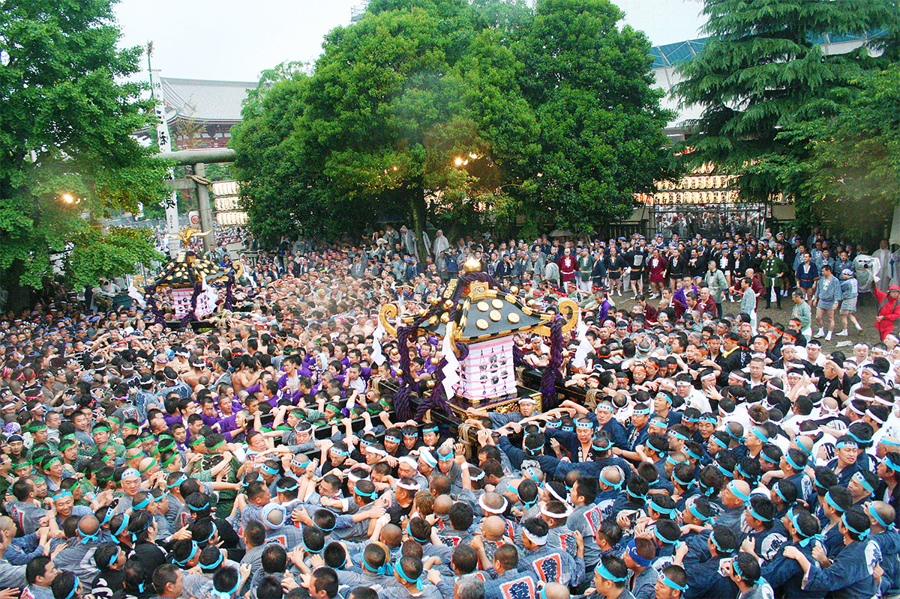
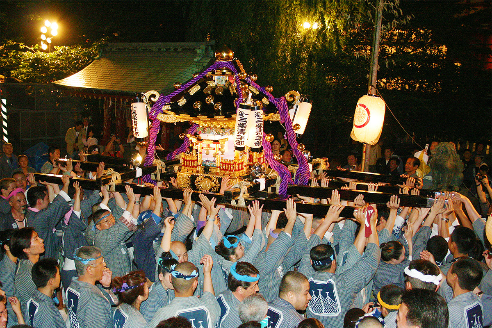
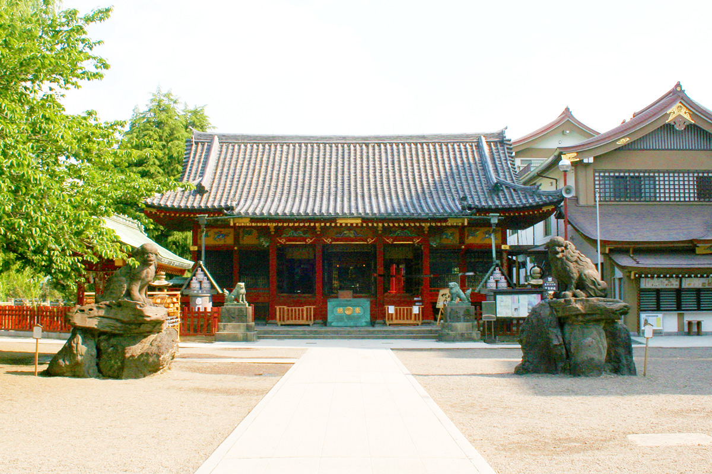
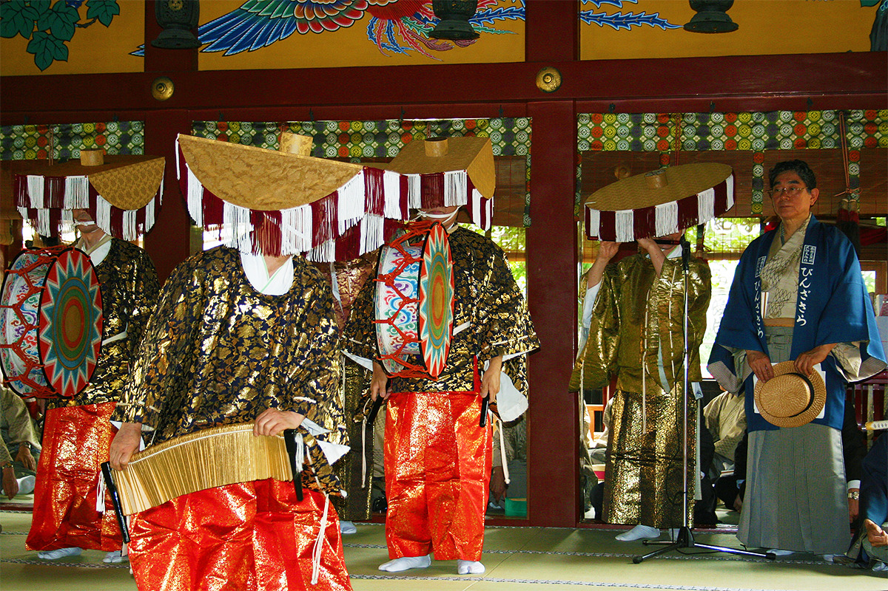
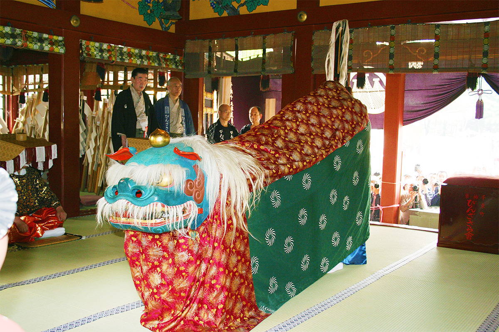
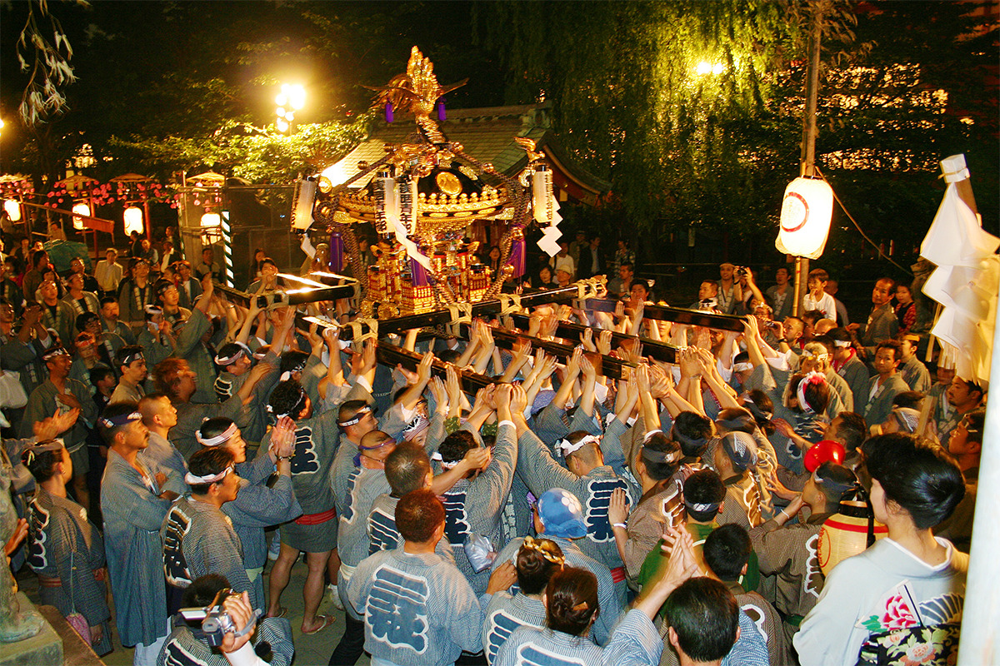
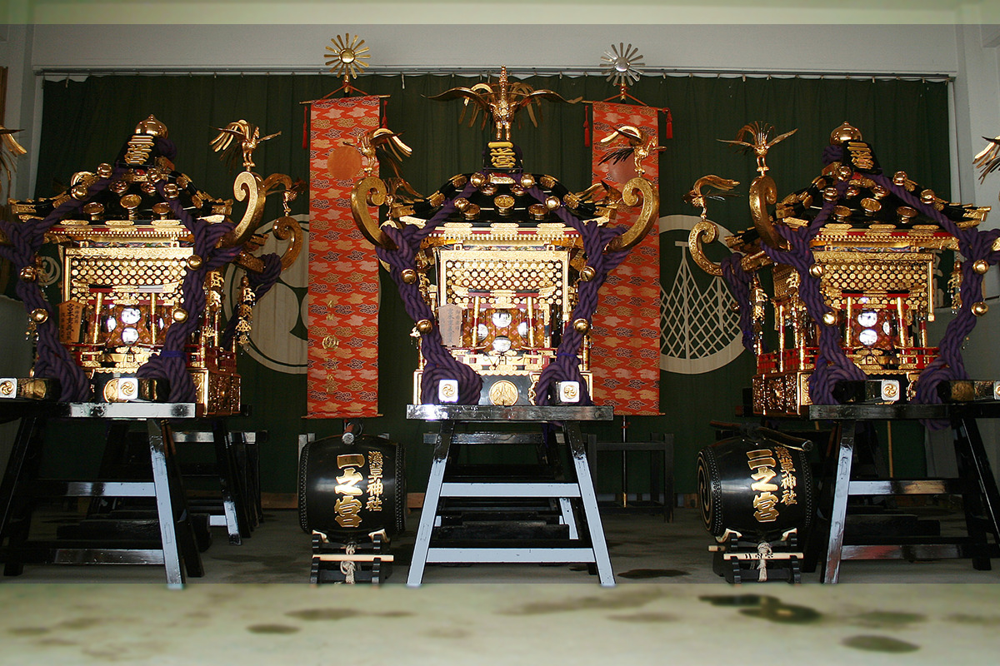
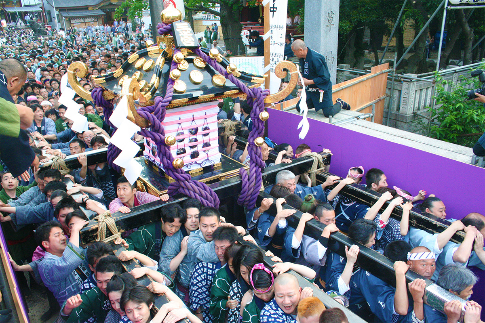

Токио · Асакуса · праздник
Сандзя мацури: три майских дня, когда Асакуса несёт сотню паланкинов

Говорят, в Токио надевают летнюю юкату, как только придёт Сандзя. Каждый май святилище Асакуса три дня проносит по своим кварталам около сотни паланкинов-микоси, и старая Асакуса встречает лето.
Праздник
Лето Эдо начинается в мае
Праздники в Японии издавна связаны с жизнью людей, и по ним хорошо видно, чем живёт тот или иной край. На многие из них могут прийти и путешественники: увидеть то же, что видят местные жители, и заодно узнать кое-что об истории и культуре страны. Поездка ради праздника дарит впечатления, которых не получить в обычном путешествии.
Сандзя мацури в Асакусе считают одним из трёх великих праздников Эдо, старого Токио. Это ежегодный праздник святилища Асакуса, и по преданию его впервые провели в 1312 году. Он длится три дня в мае, и главное зрелище в нём это шествие: около ста паланкинов-микоси, переносных святилищ, обходят кварталы. Есть даже поговорка, что юкату надевают, когда пришла Сандзя: праздник возвещает в городе начало лета.

История
Статуя из реки Сумида
Святилище Асакуса почитает трёх божеств, и все трое когда-то были людьми. Во времена императрицы Суйко (554–628), правившей на рубеже VI и VII веков, двое братьев-рыбаков из рода Хинокума вытащили из реки Сумида статую бодхисаттвы Каннон. Её взял к себе учёный человек из рода Хадзи, живший в этих местах, и стал почитать у себя дома. С этого начался храм Сэнсо-дзи.
Святилище Асакуса посвящено именно этим троим, основателям храма. Пока в Японии буддизм и синто были переплетены, человека из рода Хадзи почитали как воплощение будды Амиды, а братьев как воплощения бодхисаттв Каннон и Сэйси. В 1868 году, после реставрации Мэйдзи, указ разделил синтоистские святилища и буддийские храмы, и с тех пор святилище почитает троих основателей уже как своих божеств, а не как воплощения будд.

День первый
Большое шествие и танец с дощечками
У каждого из трёх дней своё главное событие.
В первый день по улицам едут повозки с музыкантами, которые играют праздничную музыку. Гейши Асакусы исполняют танцы, а за ними идёт большое шествие мужчин в куртках-хантэн распорядителей праздника. Когда шествие доходит до святилища, в его главном зале исполняют «бин-дзасара-маи».

Этот танец из числа «дэнгаку», полевых танцев, и появился он в период Муромати (1336–1573). Его исполняют, чтобы попросить богатого урожая и прогнать злых духов. Танец напоминает о временах, когда вокруг Асакусы лежали рисовые поля. По той же причине здесь показывают и танец льва «сиси-маи»: он отгоняет вредителей и болезни, которые губили урожай.

День второй
Сто паланкинов кварталов
Во второй день после торжественной церемонии паланкины всех кварталов собираются за храмом Сэнсо-дзи, получают очищение в святилище Асакуса и расходятся по своим улицам. До конца эпохи Эдо главным в празднике были не паланкины, а праздничные повозки, а главные паланкины святилища везли вверх по реке Сумида на лодках.
В 2023 году прихожане святилища жили в 44 кварталах, и паланкинов у них было около ста. Каждый квартал несёт свой, предмет гордости, и носильщики одеты в одинаковые хантэн. Когда все сто паланкинов выстраиваются на площади за Сэнсо-дзи, зрелище получается грандиозное.

День третий
Главные паланкины: чем сильнее, тем лучше
В третий день из святилища выносят три главных паланкина. Считается, что в них едут сами божества святилища, чтобы осмотреть земли, где живут их прихожане. Прихожане каждого квартала передают паланкины друг другу и так обходят весь район. Раньше главных паланкинов было семь, в том числе три, подаренные Иэмицу Токугавой (1604–1651), третьим сёгуном династии Токугава. Все они сгорели во время бомбардировки Токио в 1945 году, и нынешние три паланкина подарены святилищу уже после войны.

Считается, что чем сильнее трясти главный паланкин, тем сильнее становится сила божества. Поэтому в этот день носильщики ещё азартнее, чем накануне: толкаясь и напирая друг на друга, они проносят паланкин по каждому кварталу примерно за 40 минут.

Финал праздника это возвращение паланкинов в хранилище, которым руководят старшины артели тоби. В 2023 году между 20:00 и 20:30 три главных паланкина возвращались на территорию святилища. Бурная энергия праздника стихает, едва паланкины уходят в хранилище, и святилище погружается в тишину после праздника.
Правила
Почему нельзя просто подставить плечо
Мечтающих понести паланкин на Сандзя, особенно главный, по всей Японии очень много. Но паланкины здесь несут прежде всего прихожане святилища. Чтобы случайный человек не мог к ним прикоснуться, носильщикам выдают пропуска на территорию святилища и нашивки: так сразу видно, кто имеет право нести паланкин. На некоторых праздниках в стране носильщикам разрешают забираться на паланкин и подбадривать остальных, но на Сандзя это строго запрещено. Чтобы правила соблюдались, круг носильщиков ограничен.
В 2020 и 2021 годах из-за пандемии паланкины объезжали кварталы на грузовиках. В 2023 году вынос главных паланкинов провели в уменьшенном виде, а остальную программу в привычном объёме, и за три дня ждали около 1,5 млн человек. В 2026 году праздник прошёл с 15 по 17 мая: большое шествие вышло 15 мая в 13:00, паланкины кварталов прошли 16 мая с полудня, а главные паланкины вынесли 17 мая в 7:00 и вернули около 18:30.
Сандзя мацури, святилище Асакуса
- Даты
- третьи пятница, суббота и воскресенье мая
- Адрес
- Токио, Тайто, Асакуса, 2-3-1
- Телефон
- +81 3-3844-1575
- Сайт
- asakusajinja.jp